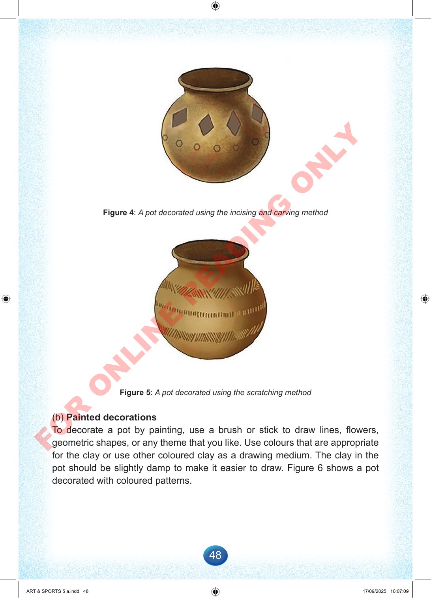

48
Figure
4:
A
pot
decorated
using
the
incising
and
carving
method
Figure
5:
A
pot
decorated
using
the
scratching
method
(b)
Painted
decorations
To
decorate
a
pot
by
painting,
use
a
brush
or
stick
to
draw
lines,
flowers,
geometric
shapes,
or
any
theme
that
you
like.
Use
colours
that
are
appropriate
for
the
clay
or
use
other
coloured
clay
as
a
drawing
medium.
The
clay
in
the
pot
should
be
slightly
damp
to
make
it
easier
to
draw.
Figure
6
shows
a
pot
decorated
with
coloured
patterns.
ART
&
SPORTS
5
a.indd
48
ART
&
SPORTS
5
a.indd
48
17/09/2025
10:07:09
17/09/2025
10:07:09
F
O
R
O
N
L
I
N
E
R
E
A
D
I
N
G
O
N
L
Y